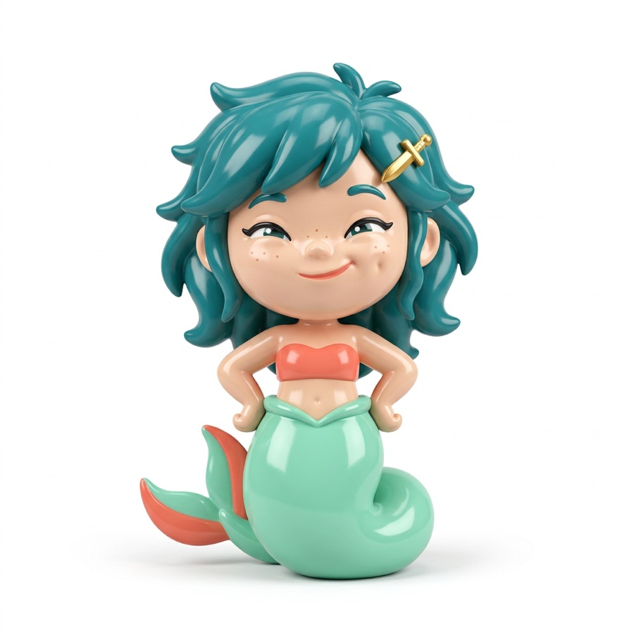

Warsaw Open Data Hackathon · 17–18.10
sawa.
Syrenka, która oprowadza cię po Warszawie. Łączy historię miasta z tym, co dzieje się dziś wieczorem.

Propozycja Pawła na spotkanie zespołuSobota, 17.10.2026
Syrenka, która oprowadza cię po Warszawie. Łączy historię miasta z tym, co dzieje się dziś wieczorem.
#17706F · primary
#8ED1B5 · secondary
#F2755F · akcent
Tylko logo.
Wszystko poza logo: nagłówki, tekst, interfejs.


Napis w Fredoce z koralową kropką. Ikona aplikacji to duże zbliżenie na głowę Sawy na jasnym tle.
Nazwa, ikona i trzy zrzuty, które od razu mówią, co robi Sawa: opowiada historię, pokazuje, co się dzieje, i pomaga się umówić.
Makieta poglądowa. Na hackathonie robimy aplikację webową, nie publikujemy jej w sklepie.